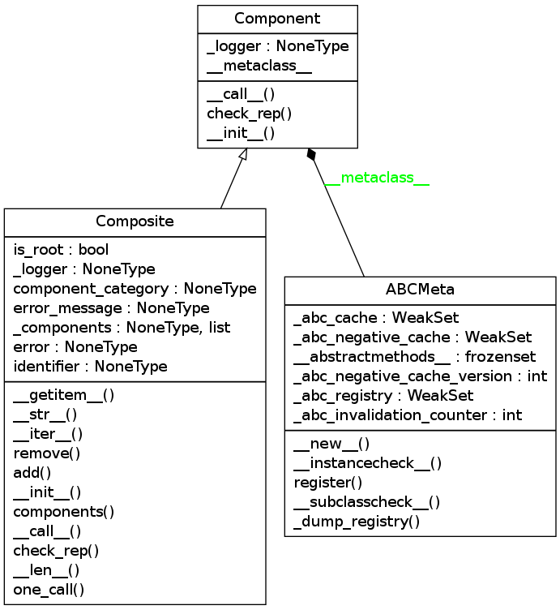

Exploring Pyreverse¶
Background¶
What is the problem to be solved?
Currently I am using plantuml to create class diagrams. It works well and is easy enough to create in sphinx but because it is created by hand it has a tendency to fall out of sync with the code.
What do you think will solve the problem?
Pyreverse is an automatic class and dependency diagram generator which is included as part of a pylint installation. It is apparently meant to be run as a command-line command only, but looking at the pylint.__init__ module you can see this function:
def run_pyreverse():
"""run pyreverse"""
from pylint.pyreverse.main import Run
Run(sys.argv[1:])
As well as some other interesting things. By looking in the pylint/setup.py file I found that it installs the following commands:
'pylint = pylint:run_pylint'
'pylint-gui = pylint:run_pylint_gui'
'epylint = pylint:run_epylint'
'pyreverse = pylint:run_pyreverse'
'symilar = pylint:run_symilar'
but I will only explore pyreverse here (although I am curious to find out what symilar is).
| Run(args) | base class providing common behaviour for pyreverse commands |
I think that by passing in arguments to the Run constructor the way the function does I can embed the creation of class and package diagrams into the source files.
Requirements¶
To run pyreverse you need pylint and graphviz. Both are available via apt-get, but since I run things in a virtualenv I tend to use pip:
sudo apt-get install graphviz
pip install pylint
Default Class and Package Diagrams¶
By default pyreverse outputs a class diagram in dot format:
digraph "classes_No_Name" {
charset="utf-8"
rankdir=BT
"2" [shape="record", label="{SampleCase|\l|}"];
}
which might be interesting to look at, but in this case I think it would be better to let pyreverse build the image file for me so that I can include it here.
class SampleCase(object):
def __init__(self):
return
args = shlex.split('-o png -p example explore_pyreverse.py')
#Run(args)
This actually turns out not to work. Although the run_pyreverse function is passing in the arguments, it (Run) has a method:
| Run.load_command_line_configuration([args]) | override configuration according to command line parameters |
That takes the args as an argument, but when the Run class uses it, it calls it without passing in the args it was given and instead duplicates the sys.argv slice that the run_pyreverse function made. To use the class I would have to patch the sys module, which seems wrong, and too much work. Perhaps sub-process will work.
subprocess.call(['pyreverse'] + args)

That was somewhat unexciting, what if we have a more complicated example?
| Composite([error, error_message, ...]) | A Composite to hold and execute Components |
import ape.components.component as component
file_name = component.__file__.rstrip('c')
command = 'pyreverse -o png -p componentplain {0}'.format(file_name)
subprocess.call(shlex.split(command))
This produces a file called ‘classes_componentplain.png’ (using -p makes it a module-level diagram, so it will pick up all the classes, thus the plural classes).

General Vue of a Module¶
That still is not a particularly exciting example, at least not visually. Here is the example given on the pyreverse blog for showing all dependencies but stripping out the detail to make it more comprehensible:
command = 'pyreverse -o png -ASmy -k {0} -p hortator'.format(file_name)
subprocess.call(shlex.split(command))
| Option | Description |
|---|---|
| -A | Show all ancestors |
| -S | Show all associates |
| -my | Add module to name (module? yes!) |
| -k | Show only class names (no methods or attributes) |

More Detail¶
The previous example was useful for showing the relationships between the Hortator class and other classes, but you can also get a more detailed view of just the hortator module:
command = 'pyreverse -c Composite -mn -a1 -s1 -f ALL -o png {0}'.format(file_name)
subprocess.call(shlex.split(command))
In this case we specified the class so it will only document the Composite, even if there are other classes in the file. It creates a file named Composite.png
PlantUml¶
Now that I look at it, it seems like the formatting is not as nice as I would like. Compare this to plantuml:
![BaseClass : NoneType _logger
BaseClass: logger()
BaseClass: __init__()
TheHortator --|> BaseClass
TheHortator: Operations
TheHortator: NoneType _countdown
TheHortator : countdown()
TheHortator: __call__()
TheHortator: __init__()
DummyClass --|> BaseClass
DummyClass: NoneType _logger
DummyClass: __call__()
DummyClass: __str__()
DummyClass: __getattr__()
DummyClass: __init__()
CountDown o-- TheHortator : _countdown
CountDown --|> DummyClass
CountDown : lap_start_time
CountDown : start_time
CountDown : IntType iteration
CountDown : iterations
CountDown : time_remaining()
CountDown : start_timer()
CountDown : next_iteration()
CountDown : __init__()](../../../../_images/plantuml-4e37b4e33d36fd271aa18b0fb5e96b5a88a2d0af.png)
But the creation of the plantuml diagram was tedious and required a lot of building and looking up of syntax. On top of that, this is only a temporary implementation, thus the inclusion of the DummyClass, as the code changes I can re-generate this file and the pyreverse graph will update on its own. Additionally, if this is embedded directly into the hortator module then every time I weave it, the diagram will update itself without me paying any attention to it.
Conclusion¶
My expectation was that I would be able to embed pyreverse into documentation so that when it is weaved there would be automatic updating. This does in fact work. The next things to do to make it more usable might be to:
- Create code that all the modules could use to generate the graphs
- Add code to move the output to the figures sub-folder with the rest of the images
- Find a way to make it more aesthetically pleasing
- See if snakefood has any advantages
File Formats Notes¶
Pyreverse is using the dot command to compile the image so it supports whatever your installation of graphviz supports. On my system that would be:
- canon
- cmap
- cmapx
- cmapx_np
- dot
- eps
- fig
- gd
- gd2
- gif
- gv
- imap
- imap_np
- ismap
- jpe
- jpeg
- jpg
- plain
- plain-ext
- png
- ps
- ps2
- svg
- svgz
- tk
- vml
- vmlz
- vrml
- wbmp
- x11
- xdot
- xlib